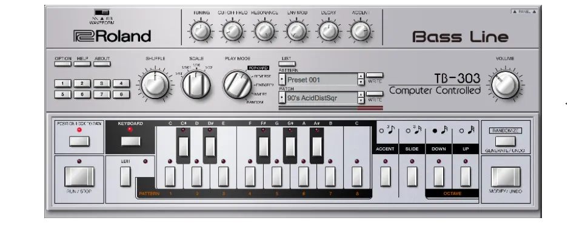

El acid house es música house con una línea de sintetizador producida por una pequeña caja plateada llamada Roland TB-303 Bassline. Lanzado en 1981, el propósito original del 303 era servir como secuenciador de líneas de bajo para guitarristas (TB significa "Transistor Bass"). Se fabricaron 10.000 unidades. No se vendió bien y 18 meses después, el 303 fue retirado del mercado. Cinco años después, los productores de house en el sur de Chicago adquirieron algunos 303 baratos y comenzaron a experimentar con ellos.

Acid house is house music with a synth line produced by a small silver box called the Roland TB-303 Bassline. Released in 1981, the 303's original purpose was to serve as a bassline sequencer for guitarists (TB stands for "Transistor Bass"). 10,000 units were made. It didn't sell well, and 18 months later, the 303 was discontinued. Five years later, house producers on the South Side of Chicago picked up some cheap 303s and started experimenting with them.
Si bien el uso correcto del 303 consistía en escribir la melodía, ajustar los controles al volumen deseado y luego pulsar el botón de reproducción, nadie en Chicago a mediados de los 80 lo hacía. En cambio, pulsaban el botón de reproducción y giraban los controles mientras funcionaba (algo que los diseñadores originales no pretendían). El sonido resultante fue lo más extraño que le ha pasado a la música desde que Elvis escapó del Área 51.
While the correct way to use the 303 was to write the melody, set the controls to the desired levels, and then hit play, nobody in Chicago in the mid-80s did it that way. Instead, they'd hit play and twist the knobs while it ran (something the original designers never intended). The resulting sound was the strangest thing to happen to music since Elvis escaped Area 51.
Hay varias historias legendarias sobre cómo este extraño sonido obtuvo su nombre y quién le dio ese nombre (posiblemente Ron Hardy ), pero era una descripción perfecta: Ácido . No había mejor palabra para describirlo. Era Ácido. Podría ser una referencia a las drogas, pero era más acertada para el sonido que producía.
There are several legendary stories about how this strange sound got its name and who gave it that name (possibly Ron Hardy ), but it was the perfect description: Acid. There was no better word for it. It was Acid. It might be a drug reference, but it fit the sound it produced even better.
Acid no tiene por qué usar un 303. Puedes crear Acid con cualquier dispositivo que tenga los controles de filtro necesarios para lograr el sonido característico, vibrante, rítmico y atemporal de Acid, y existen varios modelos que no son 303 que pueden lograrlo, como el SH-101, el MC-202, el Juno 106, el Jupiter 8, el FR-777, el Korg Prophecy o cualquier otro clon de un 303, como Devilfish, Rebirth y Reason. La música ácida no se define por el dispositivo, sino por el sonido.
Acid doesn't have to use a 303. You can make Acid with any device that has the filter controls needed to get that characteristic, vibrant, rhythmic, timeless Acid sound, and there are several non-303 models that can pull it off, like the SH-101, the MC-202, the Juno 106, the Jupiter 8, the FR-777, the Korg Prophecy, or any 303 clone, like Devilfish, Rebirth, and Reason. Acid music isn't defined by the device, but by the sound.
Para hablar de Acid House, debemos empezar por el principio, y el principio es Phuture - Acid Tracks , un temazo de 12 minutos compuesto solo por un beat y una sola línea 303 en bucle, y alguien que simplemente le da caña a esos controles. Es el giro de los controles lo que hace que el acid sea Acid.
To talk about Acid House, we have to start at the beginning, and the beginning is Phuture - Acid Tracks , a 12-minute banger made up of nothing but a beat and a single looping 303 line, with someone just wailing on those knobs. It's the twisting of the controls that makes acid Acid.
El Acid House fue el primer género de música electrónica en tener un tipo de fiesta que lleva su nombre: la fiesta Acid House. Fue un éxito en Chicago y el Medio Oeste, y se volvió aún más popular en el Reino Unido en el verano del 88 (el llamado Segundo Verano del Amor), donde los fiesteros de vacaciones lo escucharon en Ibiza por primera vez mientras consumían éxtasis por primera vez.
Acid House was the first electronic music genre to have a type of party named after it: the Acid House party. It was a hit in Chicago and the Midwest, and became even more popular in the UK in the summer of '88 (the so-called Second Summer of Love), where holidaying partygoers first heard it in Ibiza while taking ecstasy for the first time.
Trajeron la experiencia al Reino Unido y un año después nacieron las raves.
They brought the experience back to the UK, and a year later raves were born.